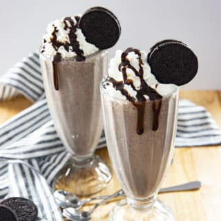

Back to home page
Oreo Ice Cream

ingredients
- 2 Cups Vanilla Ice Cream
- ⅔ Cup Milk
- 8 Oreo Cookies
- 1 Teaspoon Vanilla Extract
- Whipped Cream for serving
Direction
- Add the ice cream, milk and Oreo cookies to your blender. Pulse until mostly smooth.
- Serve in large glasses with whipped cream if desired.